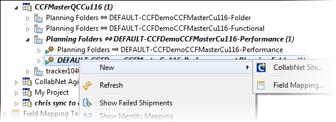
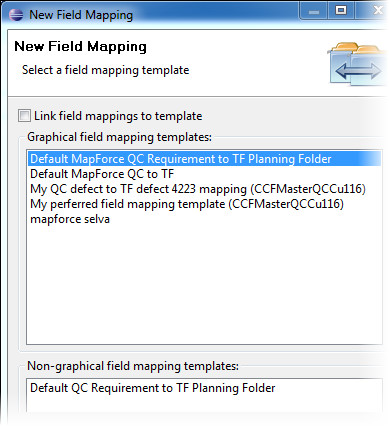

You set up field mappings to define how the data in one connector participant is transformed to the other.
There are three kinds of field mappings:
- CUSTOM_XSLT - non-graphical mapping based on a user-supplied XSL transformation. It offers the greatest flexibility but requires programming skills to modify.
- MAPFORCE - graphical mapping defined using Altova MapForce. See the CCF documentation on graphical mapping for details.
- MAPPING_RULES - transformation rules set up using the custom field mapping editor.
-
In the CollabNet Sites view, expand a node under Repository Mappings.
-
Right-click a repository mapping direction and select .
Here's an example.

-
In the Create Field Mapping dialog, select a field mapping template.

-
If you select Link field mapping to template, changes to the template will affect this field mapping.
-
If you select Link field mapping to template, changes to the template will affect the repository mapping direction.
The alternative is to define your own field mapping based on a template -- changes to the template will not affect the repository mapping direction.
-
Click Finish.